Assigned Reading:
Chapter 3 from: Bivand, R. S., Pebesma, E., Gomez-Rubio, V. 2013. Applied Spatial Data Analysis with R, 2nd ed. Springer. Stanford Full Text
Suggested Reading:
Chapters 2 and 8 from: Bivand, R. S., Pebesma, E., Gomez-Rubio, V. 2013. Applied Spatial Data Analysis with R, 2nd ed. Springer. Stanford Full Text
Chapter 2 is an overview of how R handles spatial data. Chapter 8 is useful for mapping model-based spatial predictions.
There are two main ways to represent spatial data:
The way spatial data are displayed depends on their projection or coordinate reference system (CRS). Some projections preserve distances between points whereas others presernce area or angles. Know what the projection you are using does to distances before measuring distances between points using their coordinates.
The package sp has many of the base methods for handling spatial data in R. The package rgdal is needed to support different projections.
Objects in R that contain spatial information have a special class “Spatial”. This means that they have information on the projection (stored as proj4string) and the broadest extent of the data (stored as a bounding rectangle/box bbox).
There are special classes for each type of spatial data:
SpatialPoints and SpatialPointsDataFrameSpatialLines and SpatialLinesDataFrameSpatialPolygons and SpatialPolygonsDataFrame (definitely read Chp 2 if you need to work with polygon data)SpatialGrid and SpatialGridDataFrame or SpatialPixels and SpatialPixelsDataFrame (use the raster package if you are mostly working with gridded data- it stores information much more efficiently and is easier to use).Use the CRS() function to add a projection to data to turn it into spatial data. CRS accepts text formatted according to the proj.4 framework, which looks like:
CRS("+proj=longlat +ellps=WGS84")
This tells R that the coordinates in the associated data are in longitude and latitude and that the model of the shape of the earth that should be used (WGS84). This tutorial gives an explanation of coordinate reference systems in R and its parent website is a great resources for spatial analysis in R.
Other links:
Base graphics
Use: plot() and image()
Pros:
Cons:
Grid graphics (e.g. lattice)
spplot() is based on xyplot() for point data and levelplot() for grid data.
Pros:
Cons:
ggplot2
Use: ggplot()
Pros:
Cons:
ggplot doesn’t work automatically on SpatialPointsDataFrames or gridded data.geom_grid and geom_tile are for gridded data but may be inefficient for very large grids because data must be supplied in long form rather than a matrix of values.Useful functions:
colorRampPalette() makes a color ramp between the indicated colors with a given number of colorsclassIntervals() creates set of intervals between two numbers with breaks between intervals defined in different ways.Traditional plot system (base graphics)
mesuse is a dataframe with 155 obs. of 14 variables. First two columns are lat/long identifying sampling sites. The remaining collumns are environmental variables collected at each point. Each point represents as sampling site in the flood plain of the river Meuse in the Netherlands. Researchers were interested in topsoil heavy metal concentrations.
library(sp)
data(meuse)
coordinates(meuse) <- c("x", "y") # tells r to use x and y collumns as the lat/long
plot(meuse) # by default plots the points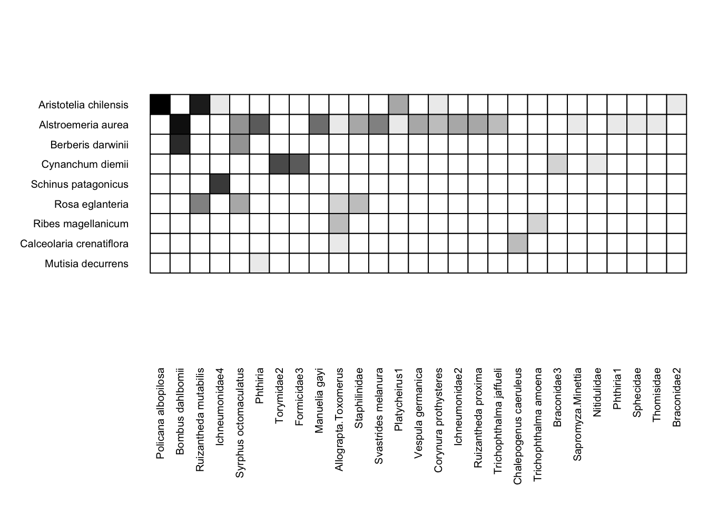
cc <- coordinates(meuse)
m.sl <- SpatialLines(list(Lines(list(Line(cc)), "line1")))
plot(m.sl) # plots lines connecting all the points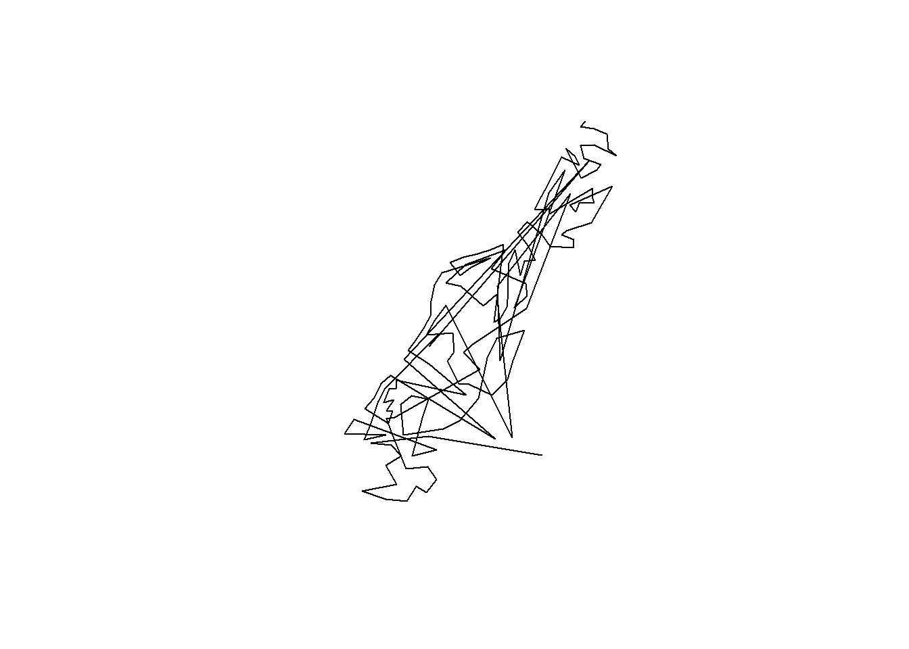
data(meuse.riv) # lat/longs outlining bank or river
meuse.lst <- list(Polygons(list(Polygon(meuse.riv)), "meuse.riv")) # not sure what this is doing?
meuse.pol <- SpatialPolygons(meuse.lst) # converts list to SpatialPolygon, which can be plotted
plot(meuse.pol, col = "grey") 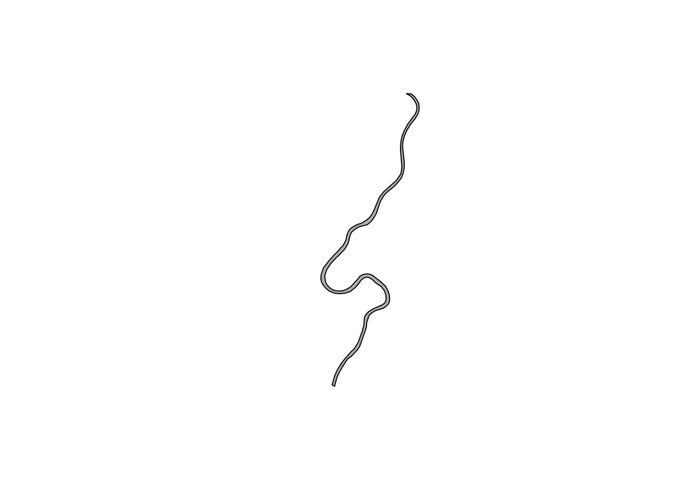
str(meuse.lst)## List of 1
## $ :Formal class 'Polygons' [package "sp"] with 5 slots
## .. ..@ Polygons :List of 1
## .. .. ..$ :Formal class 'Polygon' [package "sp"] with 5 slots
## .. .. .. .. ..@ labpt : num [1:2] 180183 331123
## .. .. .. .. ..@ area : num 2122714
## .. .. .. .. ..@ hole : logi FALSE
## .. .. .. .. ..@ ringDir: int 1
## .. .. .. .. ..@ coords : num [1:176, 1:2] 182004 182137 182252 182314 182332 ...
## .. ..@ plotOrder: int 1
## .. ..@ labpt : num [1:2] 180183 331123
## .. ..@ ID : chr "meuse.riv"
## .. ..@ area : num 2122714str(meuse.pol)## Formal class 'SpatialPolygons' [package "sp"] with 4 slots
## ..@ polygons :List of 1
## .. ..$ :Formal class 'Polygons' [package "sp"] with 5 slots
## .. .. .. ..@ Polygons :List of 1
## .. .. .. .. ..$ :Formal class 'Polygon' [package "sp"] with 5 slots
## .. .. .. .. .. .. ..@ labpt : num [1:2] 180183 331123
## .. .. .. .. .. .. ..@ area : num 2122714
## .. .. .. .. .. .. ..@ hole : logi FALSE
## .. .. .. .. .. .. ..@ ringDir: int 1
## .. .. .. .. .. .. ..@ coords : num [1:176, 1:2] 182004 182137 182252 182314 182332 ...
## .. .. .. ..@ plotOrder: int 1
## .. .. .. ..@ labpt : num [1:2] 180183 331123
## .. .. .. ..@ ID : chr "meuse.riv"
## .. .. .. ..@ area : num 2122714
## ..@ plotOrder : int 1
## ..@ bbox : num [1:2, 1:2] 178304 325698 182332 337685
## .. ..- attr(*, "dimnames")=List of 2
## .. .. ..$ : chr [1:2] "x" "y"
## .. .. ..$ : chr [1:2] "min" "max"
## ..@ proj4string:Formal class 'CRS' [package "sp"] with 1 slot
## .. .. ..@ projargs: chr NAstr(meuse)## Formal class 'SpatialPointsDataFrame' [package "sp"] with 5 slots
## ..@ data :'data.frame': 155 obs. of 12 variables:
## .. ..$ cadmium: num [1:155] 11.7 8.6 6.5 2.6 2.8 3 3.2 2.8 2.4 1.6 ...
## .. ..$ copper : num [1:155] 85 81 68 81 48 61 31 29 37 24 ...
## .. ..$ lead : num [1:155] 299 277 199 116 117 137 132 150 133 80 ...
## .. ..$ zinc : num [1:155] 1022 1141 640 257 269 ...
## .. ..$ elev : num [1:155] 7.91 6.98 7.8 7.66 7.48 ...
## .. ..$ dist : num [1:155] 0.00136 0.01222 0.10303 0.19009 0.27709 ...
## .. ..$ om : num [1:155] 13.6 14 13 8 8.7 7.8 9.2 9.5 10.6 6.3 ...
## .. ..$ ffreq : Factor w/ 3 levels "1","2","3": 1 1 1 1 1 1 1 1 1 1 ...
## .. ..$ soil : Factor w/ 3 levels "1","2","3": 1 1 1 2 2 2 2 1 1 2 ...
## .. ..$ lime : Factor w/ 2 levels "0","1": 2 2 2 1 1 1 1 1 1 1 ...
## .. ..$ landuse: Factor w/ 15 levels "Aa","Ab","Ag",..: 4 4 4 11 4 11 4 2 2 15 ...
## .. ..$ dist.m : num [1:155] 50 30 150 270 380 470 240 120 240 420 ...
## ..@ coords.nrs : int [1:2] 1 2
## ..@ coords : num [1:155, 1:2] 181072 181025 181165 181298 181307 ...
## .. ..- attr(*, "dimnames")=List of 2
## .. .. ..$ : chr [1:155] "1" "2" "3" "4" ...
## .. .. ..$ : chr [1:2] "x" "y"
## ..@ bbox : num [1:2, 1:2] 178605 329714 181390 333611
## .. ..- attr(*, "dimnames")=List of 2
## .. .. ..$ : chr [1:2] "x" "y"
## .. .. ..$ : chr [1:2] "min" "max"
## ..@ proj4string:Formal class 'CRS' [package "sp"] with 1 slot
## .. .. ..@ projargs: chr NAdata(meuse.grid) # from GIS data?
coordinates(meuse.grid) <- c("x", "y")
meuse.grid <- as(meuse.grid, "SpatialPixels")
image(meuse.grid, col = "grey") You can combine multiple layers by using the add = TRUE argument
image(meuse.grid, col = "yellow")
plot(meuse.pol, col = "blue", add = TRUE)
plot(meuse, pch = 1, cex = 0.5, add = TRUE) # change shape and size of points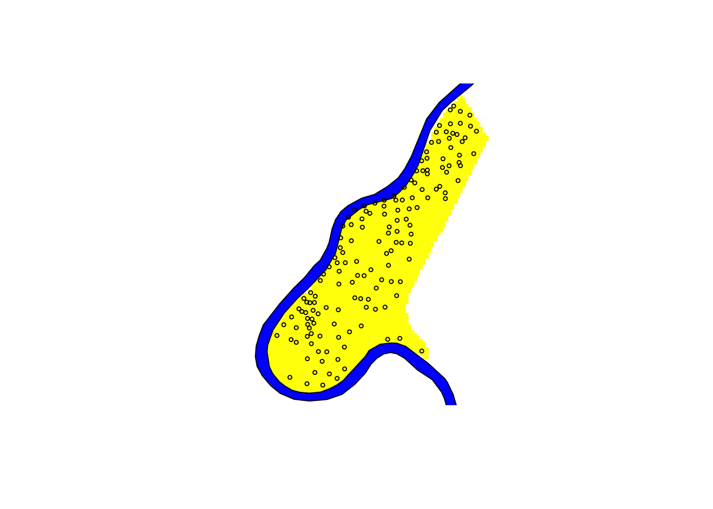
# see table 3.2 for helpful arguments for customizing plotslayout(matrix(c(1, 2), 1, 2))
plot(meuse.pol, axes = TRUE) # default axes
plot(meuse.pol, axes = FALSE) # with custom axes
axis(1, at = c(178000 + 0:2 * 2000), cex.axis = 0.7)
axis(2, at = c(326000 + 0:3 * 4000), cex.axis = 0.7)
box()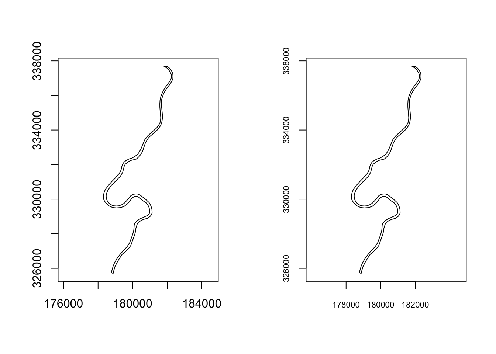
oldpar = par(no.readonly = TRUE)
layout(matrix(c(1, 2), 1, 2))
plot(meuse, axes = TRUE, cex = 0.6)
plot(meuse.pol, add = TRUE)
title("Sample locations")
par(mar = c(0, 0, 0, 0) + 0.1)
plot(meuse, axes = FALSE, cex = 0.6)
plot(meuse.pol, add = TRUE)
box() 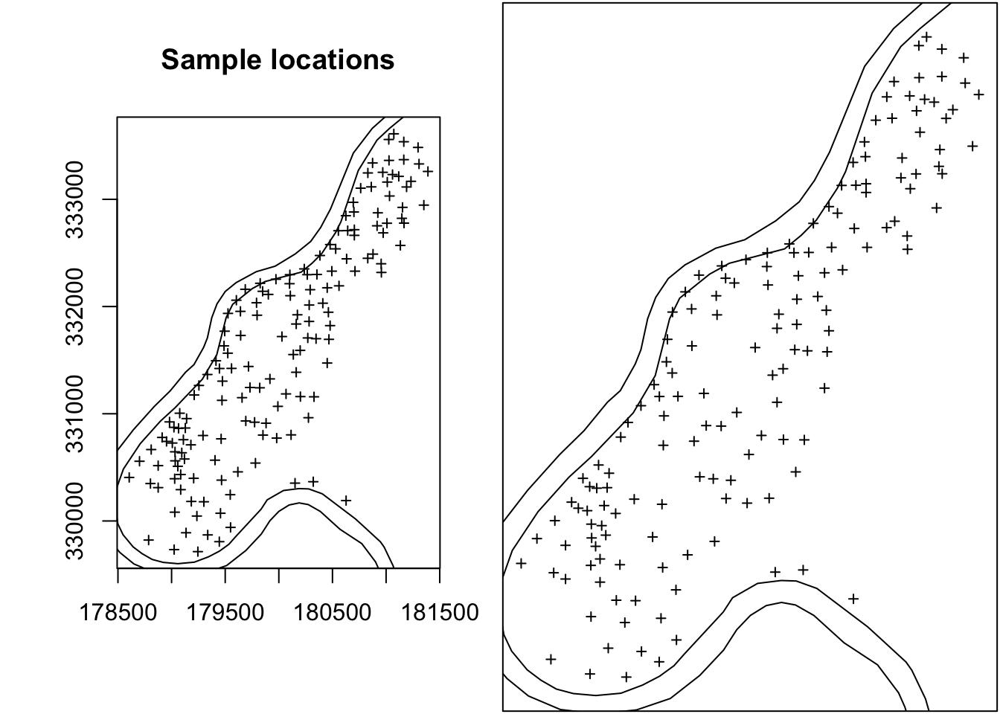
par(oldpar)# Install and load packages
#install.packages("maptools")
library(maptools) ## Checking rgeos availability: FALSE
## Note: when rgeos is not available, polygon geometry computations in maptools depend on gpclib,
## which has a restricted licence. It is disabled by default;
## to enable gpclib, type gpclibPermit()library(maps)
#install.packages("rgdal")
library(rgdal) ## Warning: package 'rgdal' was built under R version 3.4.3## rgdal: version: 1.2-16, (SVN revision 701)
## Geospatial Data Abstraction Library extensions to R successfully loaded
## Loaded GDAL runtime: GDAL 2.1.3, released 2017/20/01
## Path to GDAL shared files: /Library/Frameworks/R.framework/Versions/3.4/Resources/library/rgdal/gdal
## GDAL binary built with GEOS: FALSE
## Loaded PROJ.4 runtime: Rel. 4.9.3, 15 August 2016, [PJ_VERSION: 493]
## Path to PROJ.4 shared files: /Library/Frameworks/R.framework/Versions/3.4/Resources/library/rgdal/proj
## Linking to sp version: 1.2-5wrld <- map("world", interior = FALSE, xlim = c(-179, + 179), ylim = c(-89, 89),
plot = FALSE)
wrld_p <- pruneMap(wrld, xlim = c(-179, 179))
llCRS <- CRS("+proj=longlat +ellps=WGS84")
wrld_sp <- map2SpatialLines(wrld_p, proj4string = llCRS)
prj_new <- CRS("+proj=moll")
wrld_proj <- spTransform(wrld_sp, prj_new)
wrld_grd <- gridlines(wrld_sp, easts = c(-179, seq(-150, + 150, 50), 179.5),
norths = seq(-75, 75, 15), ndiscr = 100)
wrld_grd_proj <- spTransform(wrld_grd, prj_new)
at_sp <- gridat(wrld_sp, easts = 0, norths = seq(-75, + 75, 15), offset = 0.3)
at_proj <- spTransform(at_sp, prj_new)
plot(wrld_proj, col = "grey60")
plot(wrld_grd_proj, add = TRUE, lty = 3, col = "grey70")
text(coordinates(at_proj), pos = at_proj$pos, offset = at_proj$offset,
labels = parse(text = as.character(at_proj$labels)), cex = 0.6)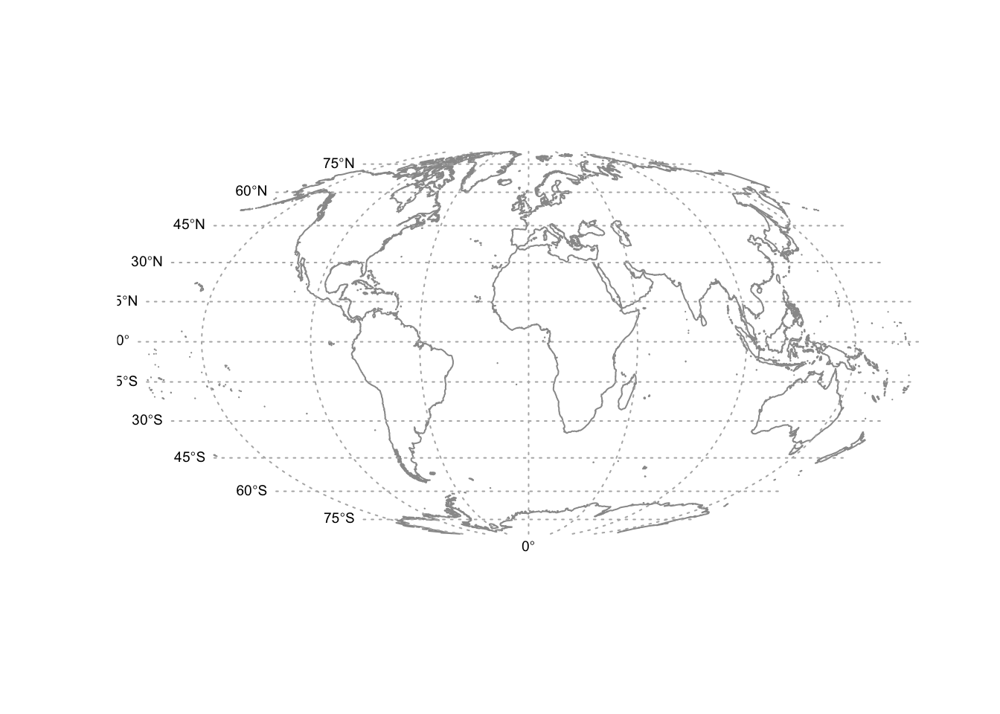
Up to now we have only plotted the geometry or topology of the spatial objects. If in addition we want to show feature characteristics or attributes of the objects, we need to use type, size, or colour of the symbols, lines, or polygons.
#install.packages("gstat")
library(gstat) idw.out <- gstat::idw(zinc ~ 1, meuse, meuse.grid, idp = 2.5) # gstat package used to create objects that hold info used for geostatistical prediction. idw is inverse distance weighted interpolation.## [inverse distance weighted interpolation]grays = gray.colors(4, 0.55, 0.95) # defines color scheme
image(idw.out, col = grays, breaks = c(100, 200, 400, 800, 1800))
plot(meuse.pol, add = TRUE)
plot(meuse, pch = 1, cex = sqrt(meuse$zinc)/40, add = TRUE)
legVals <- c(100, 200, 500, 1000, 2000)
legend("bottomleft", legend = legVals, pch = 1, pt.cex = sqrt(legVals)/40, bty = "n", title = "measured")
legend("topleft", legend = c("100-200", "200-400", "400-800", "800-1800"), fill = grays, bty = "n", title = "interpolated")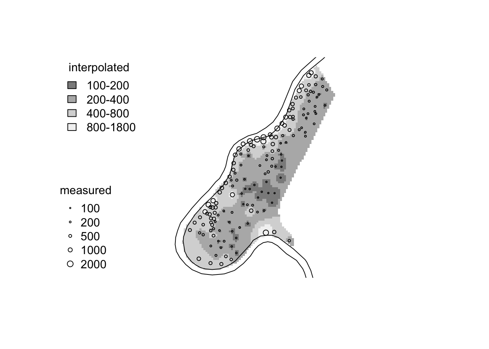
Tellis/lattice plots with spplot
spplot provides plotting of spatial data with attributes through the Trellis graphics system. Good for making conditional plots.
library(lattice)
spplot(meuse, c("cadmium", "zinc", "copper", "lead")) # easy way to plot side by side maps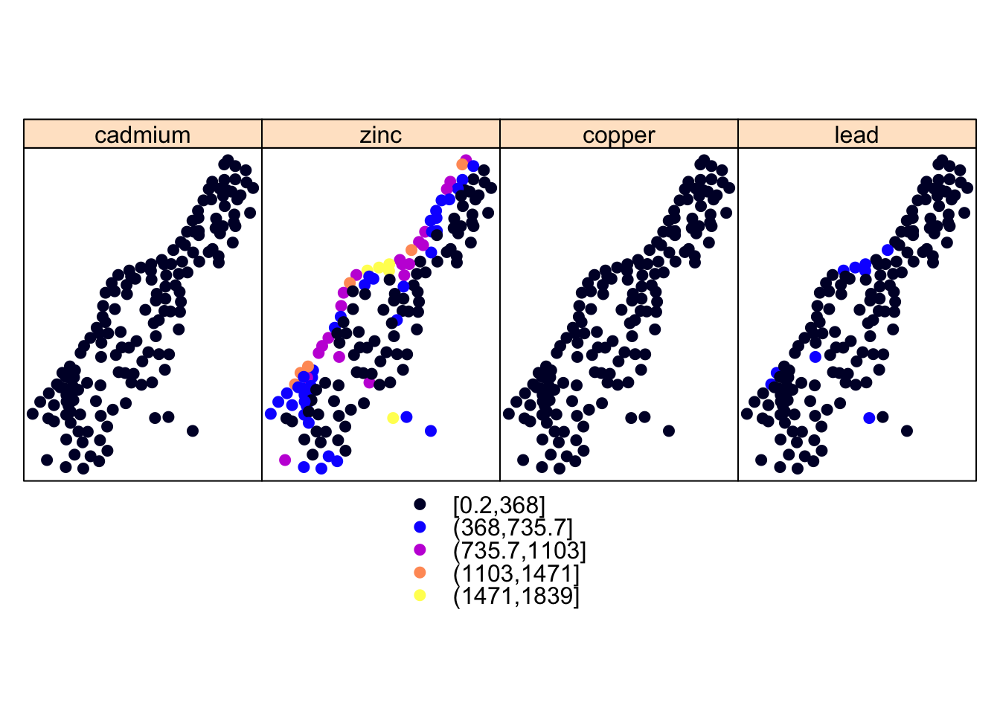
library(maptools)
data(meuse.grid)
coordinates(meuse.grid) <- c("x", "y")
meuse.grid <- as(meuse.grid, "SpatialPixelsDataFrame")
im <- as.image.SpatialGridDataFrame(meuse.grid["dist"])
cl <- ContourLines2SLDF(contourLines(im))
spplot(cl)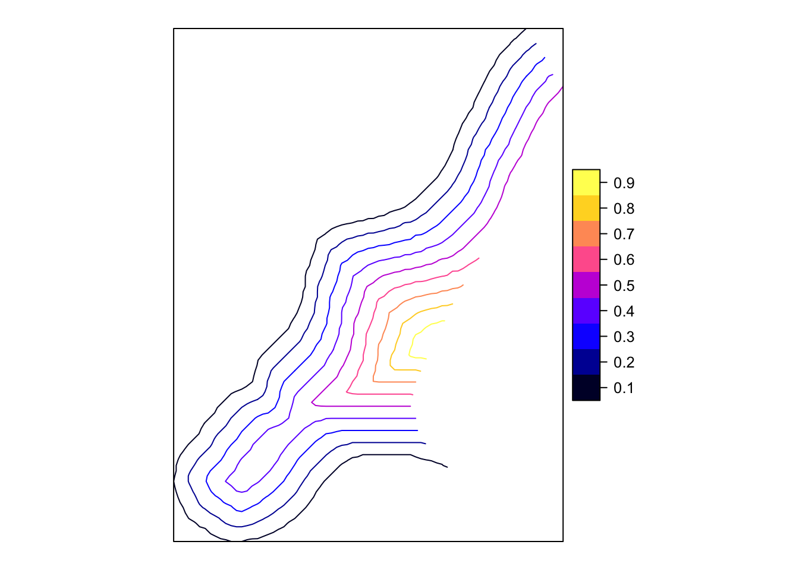
river <- list("sp.polygons", meuse.pol)
north <- list("SpatialPolygonsRescale", layout.north.arrow(), offset = c(178750, 332500), scale = 400)
scale <- list("SpatialPolygonsRescale", layout.scale.bar(), offset = c(180200, 329800), scale = 1000, fill = c("transparent", "black"))
txt1 <- list("sp.text", c(180200, 329950), "0")
txt2 <- list("sp.text", c(181200, 329950), "1 km")
pts <- list("sp.points", meuse, pch = 3, col = "black")
meuse.layout <- list(river, north, scale, txt1, txt2, pts)
zn <- meuse["zinc"]
spplot(zn, sp.layout = meuse.layout)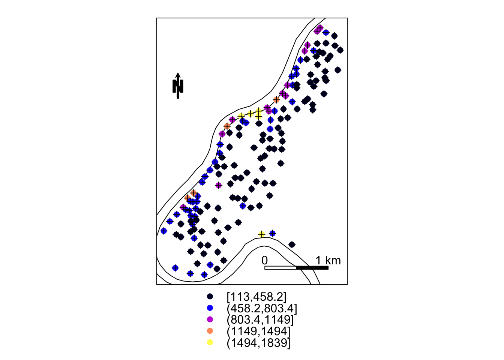
** Other options: ggplot2 and latticeExtra**
library(ggplot2)
methods(fortify) # use fortify function to convert spatial data to a dataframe which ggplot can read## [1] fortify.cld* fortify.confint.glht*
## [3] fortify.data.frame* fortify.default*
## [5] fortify.function* fortify.glht*
## [7] fortify.Line* fortify.Lines*
## [9] fortify.lm* fortify.map*
## [11] fortify.NULL* fortify.Polygon*
## [13] fortify.Polygons* fortify.SpatialLinesDataFrame*
## [15] fortify.SpatialPolygons* fortify.SpatialPolygonsDataFrame*
## [17] fortify.summary.glht*
## see '?methods' for accessing help and source codeHowever, doesn’t work for SpatialPointsDataFrame such as meuse data set, so we have to do it manually.
m = as(meuse, "data.frame")
ggplot(m, aes(x, y)) + geom_point() + coord_equal()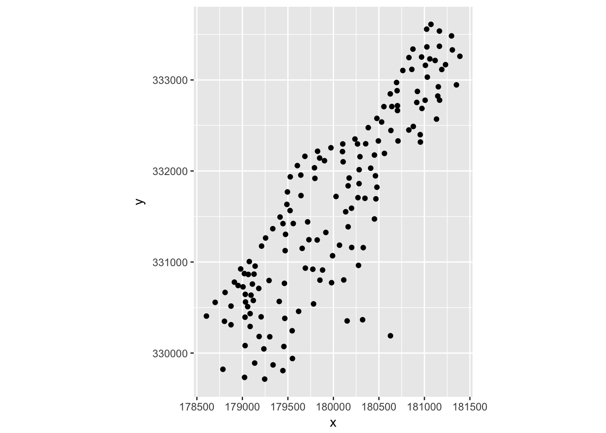
library(latticeExtra) ## Loading required package: RColorBrewer##
## Attaching package: 'latticeExtra'## The following object is masked from 'package:ggplot2':
##
## layerp = spplot(meuse["zinc"])
m = SpatialPolygonsDataFrame(meuse.pol, data.frame(col = 1), match.ID = FALSE)
l = spplot(m)
l+p 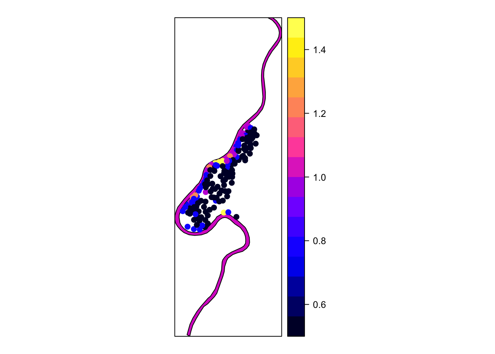
p+l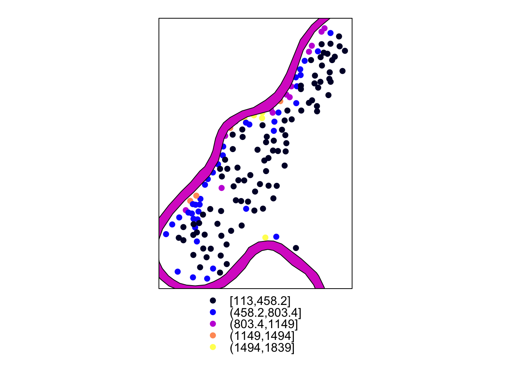
http://eriqande.github.io/rep-res-web/lectures/making-maps-with-R.html
https://timogrossenbacher.ch/2016/12/beautiful-thematic-maps-with-ggplot2-only/
1) Which of the three approaches (base plot, lattice, ggplot2) do you prefer?
2) What kinds of spatial data do you have and what kinds of visuals have you used?
3) Have you used any other usefull packages for vizualizing spatial data?
4) Pros/cons of using R vs. GIS or other platforms for data visualization?